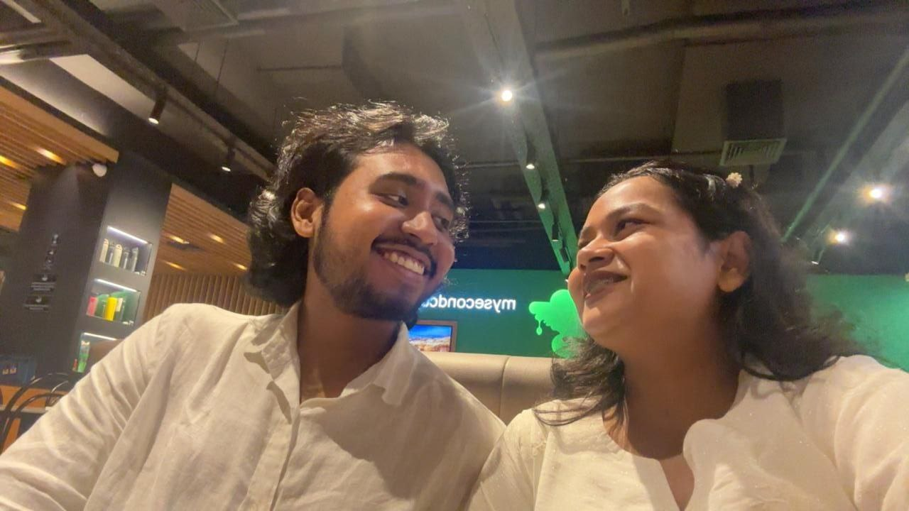

To someone very special to me,
you’ve brought so much meaning into my life.
I feel lucky for every moment we’ve shared.
Loving you has never felt forced —
it has always felt natural and real.
I don’t know what tomorrow holds,
but I know what I feel in my heart.
And that feeling has always been you. ❤️
No matter where we stand today,
I’ll always be grateful for us.
For the laughs, the memories,
and the love we once shared.
You were never ordinary to me. 🌹

Maybe life gets complicated,
maybe we both make mistakes…
but what I felt for you was real.
And real things don’t disappear easily.
They stay in the heart. 💕